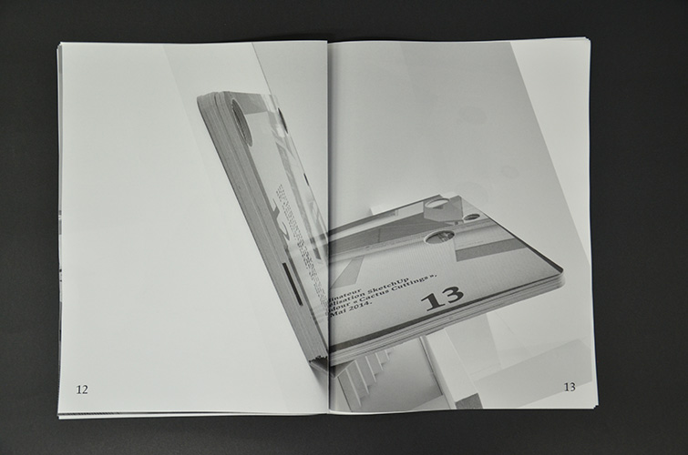
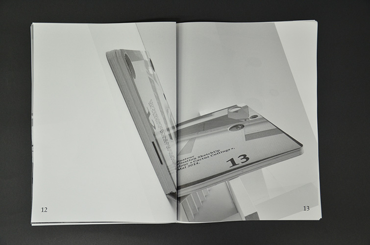

Un vingtième
Une exposition imprimée de Yann Sérandour par huit étudiants de la HEAR Coordination Jérôme Saint-Loubert Bié Participants au workshop Marine Bigourie, Zelda Colombo, Mathilde Cordier, Pricilla Degardin, Angéline Girard, Quentin Juhel, Antoine Langé, Alix Sanchez Photographies de l'exposition Antoine Lejolivet Exposition du 1er avril au 1er mai 2016 La Chaufferie, galerie de la Haute école des arts du Rhin 5 rue de la Manufacture des Tabacs 67000 Strasbourg


 
